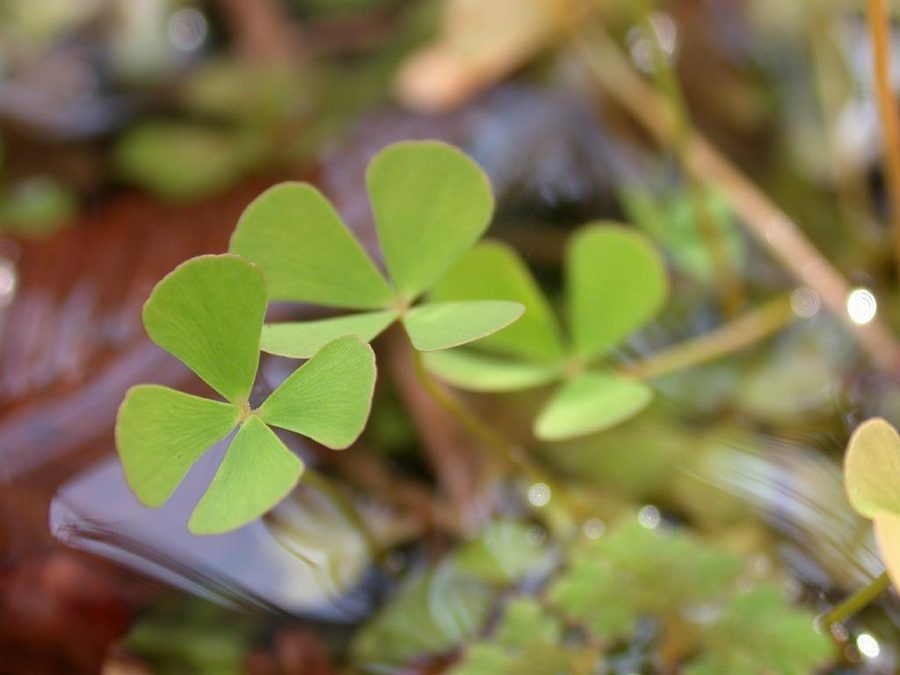

जल तिपतियाWater Clover Fern
Marsilea quadrifolia · Marsileaceae · FLR-0025

- Scientific name
- Marsilea quadrifolia L.
- Family
- Marsileaceae
- Hindi
- जल तिपतिया / चौपत्ती
- Status here
- native
- IUCN
- LC
When to look कब देखें
Expected mainly in April, May, June, July, August, September, October, November.
जल तिपतिया / Water Clover Fern
Marsilea quadrifolia L. — Marsileaceae
जल तिपतिया — धान के खेत और तालाब की किनार की वह छोटी-सी फर्न जो बिल्कुल चार-पत्ती वाले तिपतिये जैसी दिखती है। चार त्रिकोणी पत्तियाँ क्रॉस के आकार में — देखते ही पहचान लेते हैं। रात को पत्तियाँ बंद हो जाती हैं, सुबह खुलती हैं। बीज नहीं बनाती — बीजाणु बनाती है, छोटे-छोटे सख्त कैप्सूल में जो सूखे में दशकों तक ज़िंदा रहते हैं। जब पानी मिलता है, घंटों में उग आती है। पूर्वी UP के हर सीजनल तालाब और खेत की पगडंडी के किनारे यह है — सिर्फ ध्यान से देखना ज़रूरी है।
Quick Identification त्वरित पहचान
| Feature | Description |
|---|---|
| Leaf form | Four triangular leaflets arranged in a cross — identical to a four-leaf clover |
| Size | Leaflets 1–2 cm; petiole 5–20 cm depending on water depth |
| Surface | Waxy, superhydrophobic — water beads and rolls off |
| Nyctinasty | Leaflets fold upward and close at dusk; reopen at dawn |
| Sporocarps | Hard, bean-shaped, brown; 4–6 mm; borne at stem base — not seeds |
| Rhizome | Creeping in mud; spreads laterally into dense mats |
Field tip: Any four-leafed aquatic plant in a rice paddy or pond margin with leaflets folded shut in the evening is a Marsilea fern, not a flowering clover. Check the base of the petiole for small hard brown sporocarps — conclusive identification. Most visible August–October as dense surface mats; by December only sporocarps remain in cracked pond-margin soil.
Morphology आकारिकी
| Feature | Measurement |
|---|---|
| Frond height (petiole length) | 5–20 cm |
| Leaflet length | 1–2 cm |
| Leaflet width | 1–2 cm |
| Sporocarp diameter / length | 4–6 mm |
| Megaspore dimensions | 600–800 µm |
- Leaflets: Four, obovate-triangular, 1–2 cm long; arranged at 90° angles like compass points; smooth, waxy surface that repels water (superhydrophobic)
- Petiole (stalk): Slender, 5–20 cm depending on water depth — elongates to keep leaflets at surface
- Sporocarps: Hard, bean-shaped, brown structures 4–6 mm long; borne on short stalks at base of petiole; contain both megaspores and microspores — remarkable long-viability organs (sporocarps have germinated after 100+ years of dry storage)
- Rhizome: Creeping, thin, anchored in mud; spreads laterally to form dense mats
- Nyctinasty: Leaflets fold upward and close at dusk, reopen at dawn — movement driven by turgor changes in pulvinus cells
Ecological Role पारिस्थितिक भूमिका
Aquatic soil stabiliser. Dense mats of Marsilea bind mud at pond margins and paddy bunds, reducing erosion during monsoon flooding.
Nitrogen cycling partner. The rhizosphere of Marsilea hosts nitrogen-fixing cyanobacteria, contributing to soil fertility — a significant advantage in waterlogged rice systems where anaerobic conditions limit nitrogen availability.
Refuge habitat. The dense floating mats and submerged rhizomes provide shelter and foraging substrate for tadpoles, water fleas (Cladocera), aquatic insects, and small fish fry — contributing to the aquatic food web of village ponds.
Heterospory — an evolutionary bridge. Marsilea is one of only a handful of fern genera that produce two types of spores: large megaspores (developing into female gametophytes) and small microspores (male). This trait mirrors seed-plant reproduction and represents an independent evolutionary solution to the same problem.
Bioindicator of seasonal wetlands. Presence indicates waterlogged, undisturbed soil with clean or moderately polluted water; it disappears with drainage, soil compaction, or heavy chemical inputs.
Life Cycle / Phenology जीवन चक्र
- Active growth: Post-monsoon onset (June–July); rapid vegetative spread through monsoon
- Sporocarp production: August–October as water levels drop and mud is exposed
- Dormancy: Dries back to rhizome in dry winter; sporocarps remain viable in dry soil for years
- Spore germination: Within hours of re-wetting; among the fastest spore germination rates known
- Gametophyte: Microscopic; completes entire lifecycle within the sporocarp; fertilisation occurs before spores are released — entirely protected from desiccation
- Growth: Vegetative spread via rhizome is rapid; a single plant can colonise a square metre of mud in one monsoon season
Host Plants or Prey आहार
Not applicable — autotroph. Associates:
- Cyanobacteria (Nostoc, Anabaena spp.) — nitrogen-fixing symbionts in rhizosphere
- Aquatic insects — caddisflies, water beetles use fronds as substrate
- Waterfowl and amphibians — Indian Pond Heron and Common Toad forage among mats for invertebrates
Predators / Natural Enemies शत्रु
- Waterfowl — ducks and moorhens graze fronds; rhizomes grazed by cattle at pond margins
- Snails — Pila globosa (MOL-0001) and Lymnaea graze on fronds
- Fungal infection — aquatic oomycetes can cause frond rot in stagnant water
- Human disturbance — direct removal (considered a rice paddy weed), drainage, and pesticide application are primary threats
Agricultural / Human Relevance कृषि प्रासंगिकता
Rice paddy context — complex relationship. Marsilea quadrifolia colonises transplanted rice paddies, where it is considered a minor weed by farmers. However, its nitrogen-fixing cyanobacterial associations may provide a modest fertility benefit to the paddy soil, partially offsetting competition with rice.
Traditional food. In some parts of eastern UP and Bihar, young Marsilea fronds are boiled and eaten as a green vegetable (saag), particularly during lean seasons. Rich in protein relative to other aquatic greens.
Medicinal use. Used in Ayurvedic tradition: paste of fronds applied for headache; decoction for fever. Documented in Charaka Samhita as Suvarchala.
Conservation concern. Globally the species is LC, but locally, drainage of village ponds for construction and conversion of waterlogged land to dry cultivation has substantially reduced populations in eastern UP. A silent loss from the agrarian landscape.
Expected Locally स्थानीय रूप से अपेक्षित
Not a field record. Written from published accounts for eastern Uttar Pradesh. No confirmed local sighting yet — if you have seen it, that is what the atlas needs.
अभी तक स्थानीय पुष्टि नहीं। यह विवरण प्रकाशित स्रोतों से है, किसी अवलोकन से नहीं।
Common in flooded rice paddies and seasonal pond margins throughout Basti district, particularly around village ponds (talab) that retain water through the dry season. Most visible August–October when fronds form continuous green mats on exposed mud. By December, only sporocarps remain in the dry cracked pond margin. Farmers in the region recognise the plant as a weed (jal tipatiya) but rarely attempt serious eradication.
Distribution वितरण
Global range: Native to temperate and tropical regions of Eurasia, including Europe, China, Japan, and the Indian subcontinent; introduced and naturalized in North America.
In India: Found across northern, central, and eastern India, particularly in wetlands, river basins, and irrigated paddy belts.
In Uttar Pradesh: Common in central and eastern districts, particularly in lowland districts of the Gangetic plain with extensive paddy cultivation.
In Basti district / eastern UP: Widespread in seasonal ditches, wetlands (jhils), and low-lying agricultural fields; highly abundant during the monsoon.
Range notes: No significant range changes documented; its seasonal occurrence fluctuates based on monsoon rainfall patterns.
Research Questions शोध प्रश्न
- Do the cyanobacterial communities in Marsilea rhizospheres in Basti paddies actually contribute measurable nitrogen to the paddy system — and does their effect differ from Azolla (the more commonly studied nitrogen-fixing aquatic fern)?
- What is the sporocarp viability period in the clay soils of eastern UP — can spores remain viable through multiple dry seasons?
- Does the nyctinastic (leaf-folding) behaviour affect insect herbivory rates, and which insects feed on the plant locally?
- Is the Marsilea population in this region genetically connected to populations in adjacent Bihar and Nepal, or fragmented by agricultural intensification?
- Can Marsilea be used as a cost-free bioindicator of intact seasonal wetlands in village pond surveys?
Similar Species मिलती-जुलती प्रजातियाँ
| Species | Key Difference |
|---|---|
| Four-leaf clover (Trifolium repens) | Flowering plant (Fabaceae); round leaflets, not triangular; produces flowers; terrestrial |
| Marsilea minuta | Smaller leaflets; leaflets more rounded; sporocarps smaller; commoner in drier soils |
| Oxalis (Oxalis corniculata) | Terrestrial; heart-shaped leaflets; yellow flowers; does not produce sporocarps |
Taxonomy & Classification वर्गीकरण
Original description. Marsilea quadrifolia was described by Carl Linnaeus in 1753 in Species Plantarum 2: 1099. Type locality: Western Europe ("Habitat in Europae frigidioris inundatis"). The genus name Marsilea honors the Italian naturalist Luigi Ferdinando Marsili, and the species epithet quadrifolia is Latin for four-leaved.
Subspecies. Monotypic — no subspecies are currently recognised.
Family and order placement. Belongs to the order Salviniales, family Marsileaceae. Marsileaceae is a family of heterosporous aquatic ferns, representing a unique evolutionary lineage distinct from homosporous ferns.
Phylogenetic notes. The genus Marsilea is monophyletic. Molecular studies place it as a sister group to the salvinioid ferns (Salvinia and Azolla), forming the order Salviniales (heterosporous water ferns).
IUCN status rationale. Classified as Least Concern (LC) by the IUCN Red List. It is a widely distributed aquatic fern in the Northern Hemisphere, though local declines occur due to wetland drainage and herbicide inputs.
Photo Gallery फोटो गैलरी
Atlas Connections संबंधित प्रजातियाँ
- Indian Pond Heron — forages in Marsilea mats for aquatic prey (BRD-0004)
- Asian Common Toad — uses Marsilea mats as shelter (AMP-0001)
- Freshwater Apple Snail — major snail predator of Marsilea (MOL-0001)
- Paddy — major competitor and partner in rice-field ecosystem (FLR-0014)
References संदर्भ
- Linnaeus, C. (1753). Species Plantarum, 2: 1099. Laurentii Salvii, Holmiae.
- Fraser-Jenkins, C.R. (2008). Taxonomic Revision of Three Hundred Indian Subcontinental Pteridophytes. Bishen Singh Mahendra Pal Singh, Dehra Dun.
- Johnson, D.M. (1986). Systematics of the New World species of Marsilea (Marsileaceae). Systematic Botany Monographs, 11: 1–87.
- Nagalingum, N.S. et al. (2006). Evolutionary relationships of extant ferns based on evidence from morphology and rbcL sequences. American Journal of Botany, 93(6): 862–872.
- Botanical Survey of India — Flora of Uttar Pradesh records.
- GBIF Occurrence Data — Marsilea quadrifolia, India (2026).
Source file: species/lower_plants/ferns/water_clover_fern.md